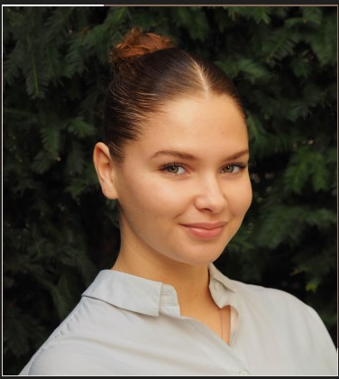

Lina Driss
Bienvenue sur mon profil!

Qui suis-je ? 🤔
Je m'appelle Lina Driss, j'ai 20 ans et je viens du Bourget. Je suis actuellement étudiante à Audencia Business School, à Nantes.
Viens découvrir mon école
Mon parcours
J'ai obtenu mon baccalauréat en filière économique et sociale avec mention très bien au Lycée Germaine Tillon au Bourget. J'ai ensuite poursuivi mes études en faisant deux années de classe préparatoire ECE au Lycée Claude Monet. Actuellement, je suis étudiante dans le Programme Grandes Ecoles d'Audencia.
Langues Parlées
- Francais : Langue maternelle
- Anglais : I have an intermediate level
- Espagnol : Tengo un nivel intermedio
- Arabe : 'Atakallamu al-'arabiyah qualilan
Mes passions
Dans la vie de tous les jours je suis quelqu'un de très dynamique, je suis tout le temps occupé... Mais certaines activités me passionnent plus que d'autres...
Voyager 🌍: j'aime voyager, car cela me permet de découvrir de nouvelles choses, de nouvelles cultures et d'en apprendre plus sur le monde
Lire 📚 : le fait de lire me permet de m'évader. En ce moment, je lis ce livre : Soleil Amer de Lilia Hassaine
La natation 🏊: je pratique ce sport depuis mon enfance. C'est un excellent moyen pour réduire son stress.
Mon Association
Je suis membre de l'association ENVOL d'Audencia. Envol est l’association RSE d’Audencia, divisée en un Pôle Social et un Pôle Environnement. Nous menons diverses missions et événements au cours de l’année afin de rythmer l’engagement RSE des étudiants.
Au sein de cette association je suis responsable du pôle FRIPENCIA qui consiste à organiser une friperie géante à Audencia et à promouvoir l'économie circulaire.
Instagram